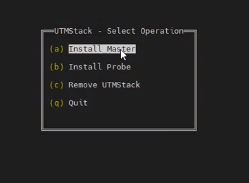
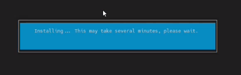
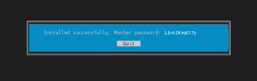
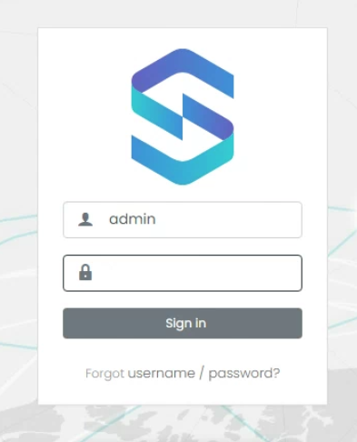

Linux Installation Guide
This guide will walk you through the process of installing UTMStack on a Linux system using the official installer script. Please follow the steps below to ensure a successful installation.
Step 1: Prepare the System
Before starting the installation, make sure that your system meets the minimum requirements and is up to date. Run the following commands to update the package list and install the necessary dependencies:
sudo apt update
sudo apt install wget
Step 2: Download the Installer Script
Download the latest version of the UTMStack installer script from the official UTMStack website. You can use the following command to retrieve the script:
wget http://github.com/AtlasInsideCorp/UTMStackInstaller/releases/latest/download/installer
Step 3: Grant Execution Permissions
Change to the root user to ensure proper execution of the installer script:
sudo su
Set execution permissions for the installer script using the following command:
chmod +x installer
Step 4: Run the Installer
Now, you are ready to run the installer script and begin the installation process. The installer script provides two options for installation: with or without parameters.
Installation Options
When using the CLI for the UTMStack installation, you have the option of installing with or without parameters.
Without Parameters (Unattended Installation)
To perform an unattended installation, execute the installer without any parameters:
./installer
With Parameters
If you prefer to customize the installation process, you can use parameters to define specific configurations. For example, to install UTMStack as a master server and set the database password, use the following command:
./installer master --db-pass "ExAmP1EpaSSWORD"
Make sure to replace “ExAmP1EpaSSWORD” with your desired password.
For probe installation, use the following command:
./installer probe --db-pass "Master's DB password" --host "Master's IP or FQDN"
Replace “Master’s DB password” with the actual password for the master server’s database, and “Master’s IP or FQDN” with the IP address or fully qualified domain name of the master server.
UTMStack password requirements at least 3 capital case letters. at least 5 lower case letters. at least 5 numbers. at least 3 special characters. Allowed special characters: , . _
After executing the installer script with the desired parameters, you will see a screen like the following:

Select the appropriate option based on the type of installation you are performing.
Once the installation begins, you will see a progress screen like the following:

The installer script will take care of downloading the necessary packages, configuring them according to your specified parameters, and deploying them onto the respective machines.
Please note that the installation process may take some time depending on the system and the options selected.
When the installation is complete, you will see a message box displaying “Installation Successful” along with the master password. It is crucial to save this password for future use:

Trubleshooting: If you find any errors during the installation, please check the installation log for more details: /var/log/utm-setup.log
You can found the password and other generated configurations in /root/utmstack.yml
Step 5: Configuration of UTMStack
After successfully installing UTMStack on your servers, it is important to configure the necessary services to ensure proper functionality. This step involves setting up best-practice firewall rulesets to control network traffic effectively. Additionally, you have the option to integrate third-party applications like M365 to enhance UTMStack’s capabilities.
To learn more about the specific firewall rules you need to create for UTMStack, please refer to the Firewall Rules section for detailed instructions.
Step 6: Installing and Configuring an SSL/TLS certificate
Step 1: Switch to the root user
sudo su
Step 2: Stop the frontend container
docker stop frontend
Stopping the frontend container ensures that the web server is temporarily halted, allowing for necessary changes to be made to the server configuration.
Step 3: Install NGINX and start it
apt install nginx
systemctl start nginx
This command installs the NGINX web server, which will be responsible for serving the website and handling HTTPS connections.
Step 4: Install Certbot with NGINX plugin
apt-get install certbot python3-certbot-nginx
This command installs Certbot, a tool for obtaining and managing SSL/TLS certificates, along with the NGINX plugin, which enables seamless integration between Certbot and NGINX.
Step 5: Obtain and install the certificate (Example using Let’s Encrypt)
certbot certonly --preferred-challenges=dns --email your_email@example.com --agree-tos -d your_domain.com
In this example, we are using a certificate from Let’s Encrypt as a demonstration. Let’s Encrypt provides free SSL/TLS certificates that are valid for 90 days.
Step 6: Disable NGINX
systemctl disable nginx
Step 7: Copy the certificate files
To use your custom certificate with UTMStack, you need to copy the certificate and private key files to the appropriate location on the server. Follow these steps:
-
Upload both files to the server into the folder /utmstack/cert/.
-
Rename the certificate file to utm.crt and the private key file to utm.key.
cp /etc/letsencrypt/live/your_domain.com/fullchain.pem /utmstack/cert/utm.crt
cp /etc/letsencrypt/live/your_domain.com/privkey.pem /utmstack/cert/utm.key
Make sure to replace your_domain.com with the actual domain name for which you obtained the certificate.
By copying the certificate and private key files to the specified location, UTMStack will be able to use the custom certificate for secure communication.
Step 8: Start the frontend container
docker start frontend
Step 9: Restart other services
docker restart logstash
Step 10: Optional - Verify the running containers
docker ps
This command lists the currently running Docker containers, allowing you to confirm that the necessary containers, including the frontend and other relevant services, are running as expected.
Step 7: Accessing the UTMStack Platform
Once you have successfully installed the UTMStack master server, you can now access the platform and start using it for your cybersecurity needs. Follow these steps to log in to the UTMStack platform:
Open your preferred web browser.
Enter the HTTPS URL of your server’s name or IP address in the browser’s address bar. For example, if your server’s IP address is 192.168.0.100, you would enter https://192.168.0.100.
Press Enter to load the UTMStack login page.

On the login page, you will be prompted to enter your admin username and password.
Enter “admin” as username and the password that was generated by the installer for the default user.
Click on the “Sign In” button to authenticate and access the UTMStack platform.